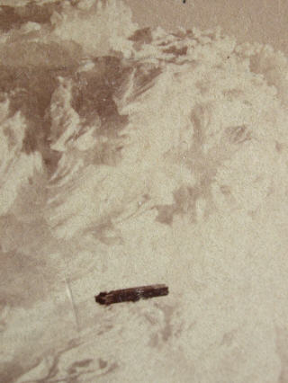

On observe simultanément dans le ciel des corps lumineux et une chute de sable.
Une substance jaunâtre tombe sur Gênes (Italie).
Elle est analysée par M. G. Boccardo et le professeur Castellani de l'Institut Technique de Gênes et trouve
qu'elle contient 66 % de sable (principalement du type silice, et un peu d'argile), 15 % d'oxide de fer
(rouille), 9 % de carbonate de chaux, 7 % de matière organique et le reste d'eau. La matière organique contient
des particules ressemblant à des spores, des grains d'amidon, des fragments de diatomées (formes d'algues dont
les parois de cellule contiennent de la silice) et des globules de cobalt bleu non-identifiés
The Journal of the Franklin Institute, 3:11, 1870-07-12..
Photo prise à l'hiver 1870/1871 au-sommet du Mont Washington. Entré à
la Librairie du Congrès en 1871 par Clogh & Kimball.

Après 03:00 Sur la ligne de chemin de fer de Boston et Lowell, observations répétées
d'une lumière rouge (semblable à un signal d'arrêt) et du bruit d'un train invisible "Ghostly Signals at Woburn", Times de Ottawa (Ontario), 1870-02-15.
Printemps
Dans l'Océan Atlantique, entre l'Amérique du Sud et l'Afrique, le capitaine Banner
et l'équipage du Lady of the Lake, un voilier à vapeur, observent pendant 30 mn un disque lumineux
de couleur grise, dont l'arrière est entouré d'un halo et dont une sorte de queue semblable à
celle d'un spermatozoïde émane du centre. Il vole contre le vent, à une altitude entre 200 et 800.
Banner en fait un croquis Scott, R. H.: "Extract from log of 'Lady
of the Lake'", Quarterly Journal of the Meterorological Society, vol. 1, Londres, 1873 - Avec croquis < Vallée, Jacques.: 1965 < Rosenberg, Samuel: "'Ancient' UFO
Reports", "UFOs in History", Scientific Study of Unidentified Flying Objects, 1969Miller, R. Dewitt: "Expert
Gives Opinion On The Saucers", The Charleroi Mail de Charleroi (Pennsylvanie), 1947-07-10.
A Ålen (Norvège), la grand-mère de Lars Lillevold
voit quelque chose qu'elle décrira plus tard comme un objet volant. Elle déclare également que quelqu'un lui a
fait signe depuis cet objet Krogh: Hessdalesrapporten, 1984,
11The Hessdalen Report, 1985, 7The
Hessdalen Report, 1971, 7.
En Suisse, pluie de grands cristaux de sel dans une tempête
de grêle An. Rec. Sci., 1872 < The Complete Books of Charles Fort. New York: Dover, 1974, p. 69 < Fitch, Donna K., Strange: August Fortean Events.
Dans l'état de New York, observations répétées d'une boule de feu mystérieuse "A Remarkable
Phenomenon", New York Times, 1870-09-25, p. 3.
Près de Paris, observation d'un ballon hostile
"Hostile Balloons", The Times, vendredi 7 octobre 1870, p. 4 < Theo Paijmans, Magonia
Exchange, 2007-03-14.
Hiver
Observation d'une armée dans le ciel Article du St. Joseph
Herald de Saint Joseph (Michigan), 1870-12-31.
Photographie d'un objet en forme de cigare devant une formation nuageuse
au-dessus du Mont Washington (New Hampshire)Summit Mt. Washington , Winter
1870-1871 Entered according to Act of Congress in the year 1871, by Clogh & Kimball, in the Office of the
Librarian of Congress, at Washington, Détail d'une vue 3D/stéreo
> UFO UpdatesDominique Caudronen propose une
explication.